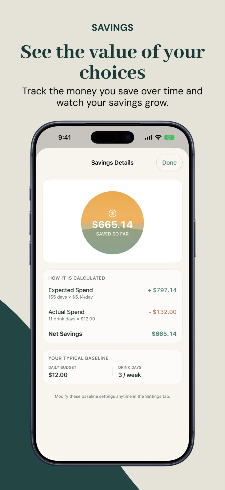

One of the most common physical changes people notice when they stop drinking alcohol is gradual, sustainable weight loss. Whether you are doing Dry January, taking an intentional 30-day break, or cutting back long term, shedding extra pounds without restrictive dieting happens often when drink calories leave your weekly routine.
However, weight loss after quitting alcohol is rarely a straight line. The scale can shift based on hydration, meal choices, sleep, and activity levels. Understanding how alcohol adds hidden calories and setting realistic expectations along a quit drinking weight loss timeline helps keep your motivation steady.
| Milestone Window | Primary Shift | Typical Scale Trend | Visible Physical Changes |
|---|---|---|---|
| Week 1 (Days 1–7) | Hydration settles & drink calories drop | Often a modest drop in water weight | Morning facial puffiness and bloating often ease |
| Week 2 (Days 8–14) | Consistent liquid calorie deficit & fewer late-night snacks | Gradual shifts depend on food and activity | Digestion often feels lighter; less stomach bloating |
| Month 1 (Days 15–30) | Cumulative calorie savings from skipped drinks | Modest, steady weight change for many people | Clothes may feel slightly looser; steadier energy |
| Month 2 (Days 31–60) | Sustained calorie deficit & better sleep habits | Continued gradual progress with balanced meals | More consistent energy for walking and workouts |
| Month 3+ (Days 61–90) | Alcohol-free routine becomes established | Long-term results vary by diet and exercise | Sustainable changes in waistline and fitness |
Why Cutting Alcohol Helps With Weight Management
To understand why weight can drop after you stop drinking, it helps to look at the calories in alcohol and what usually comes alongside it. Pure alcohol provides about 7 calories per gram, nearly as dense as fat (9 kcal/g), without providing protein, fiber, or essential nutrients.
Beyond the drink itself, several everyday factors make regular drinking add up quickly:
- Calorie priority: Because your body treats alcohol as a priority fuel to clear, extra calories from sugary mixers, beer, and rich meals are more likely to push you into a daily calorie surplus.
- Extra food calories: Lowered inhibition often leads to bar snacks, late-night takeout, or heavy comfort meals the next morning.
- Hidden mixer calories: Syrups, juices, cream liqueurs, and regular sodas can easily double the calories in a single cocktail.
Week 1: Less Bloating and Water Shifts (Days 1 to 7)
During the first seven days without alcohol, an early dip on the scale is often mostly water weight and reduced bloating rather than pure body fat loss.
Alcohol increases fluid loss, and salty bar snacks or late-night food can leave tissues holding onto extra water the next day. Once you rehydrate with plain water and eat regular meals during your first alcohol-free week, morning puffiness around the face and stomach often begins to settle. For some people, scale weight even stays flat for a few days while hydration evens out, which is completely normal.
Built into Alcohol Free Tracker
Track empty liquid calories eliminated automatically
Estimate the calories and cash you save every alcohol-free week on iPhone. Stored privately and offline with no accounts or cloud tracking.
Calculate Your Calorie Deficit on iOS →
Weeks 2 to 4: Cumulative Calorie Savings (Days 8 to 30)
By the second through fourth weeks, steady calorie savings start to show up for many people. For someone who used to drink 10 to 14 drinks per week, cutting alcohol removes a substantial weekly calorie load:
- Direct beverage calories: A 5 oz glass of wine is roughly 120 to 130 kcal, a pint of craft beer often runs 200 to 260 kcal, and a sweet cocktail can top 300 kcal. You can check standard drink sizes and calorie comparisons using NIAAA Rethinking Drinking.
- Secondary food calories: Skipping late-night pizza, delivery orders, and next-day comfort food often saves even more calories without feeling restricted.
Since roughly 3,500 calories corresponds to about one pound of body fat, removing 1,500 to 2,500 calories a week from drinks and snacks can support gradual fat loss over a month, provided those calories are not replaced with extra desserts. Taking a month off alcohol also gives your liver and cardiovascular system a welcome break from alcohol's strain (NIAAA).
Months 2 and 3: Steady Body Composition Shifts (Days 31 to 90)
Over two to three months without alcohol, consistent habits often compound. Regular heavy drinking carries broad health risks for the liver, heart, and metabolism (NIAAA), and stepping back from alcohol makes it much easier to keep daily routines consistent.
Between Day 30 and Day 90, many people notice:
- More reliable energy for movement: Fewer sluggish mornings make it easier to hit daily step goals, lift weights, or cook balanced meals at home.
- Gradual midsection changes: Consistent calorie balance over weeks and months helps reduce overall body fat, including around the waistline, though exact results depend on diet, genetics, and exercise.
- Steadier appetite cues: Without late-night drinking, regular meal timing is much easier to maintain.
Navigating Early Sugar Cravings
Around Week 1 or Week 2, some people notice stronger cravings for ice cream, chocolate, or candy. This is common and nothing to worry about:
- Routine replacement: If wine, beer, or sweet cocktails were part of your evening wind-down, your mind still expects a treat at that hour.
- Quick energy habit: Alcoholic drinks and mixers often supply quick calories and sugars, so appetite cues can temporarily lean toward sweets when you stop.
How to Support Your Results Without Pressure
Weight changes after quitting drinking work best when they feel like a byproduct of taking care of yourself rather than a strict crash diet:
- Prioritize Sleep: Alcohol fragments sleep in the second half of the night and, at higher doses, reduces REM sleep (Ebrahim et al., 2013). Better rest makes daytime workouts and balanced eating feel much easier.
- Stay Hydrated: Keep water or unsweetened sparkling water nearby in the evening to replace the pouring ritual.
- Track Avoided Calories and Cash Visually: Watching your estimated calories avoided and cash saved build up over time gives you concrete encouragement on quiet evenings.
Sources
- National Institute on Alcohol Abuse and Alcoholism (NIAAA), “Rethinking Drinking,” NIH.
- National Institute on Alcohol Abuse and Alcoholism (NIAAA), “Alcohol's Effects on the Body,” NIH.
- Ebrahim IO et al., “Alcohol and sleep I: effects on normal sleep,” Alcohol Clin Exp Res, 2013 (PubMed).